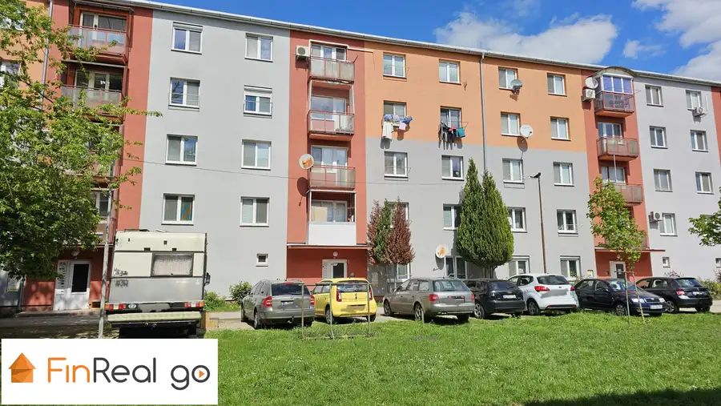
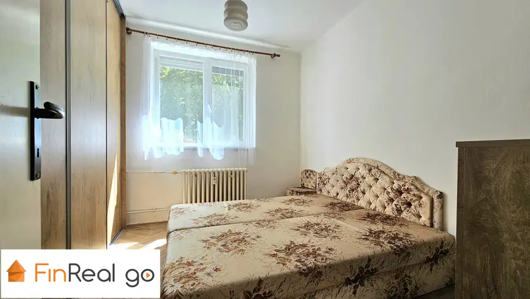
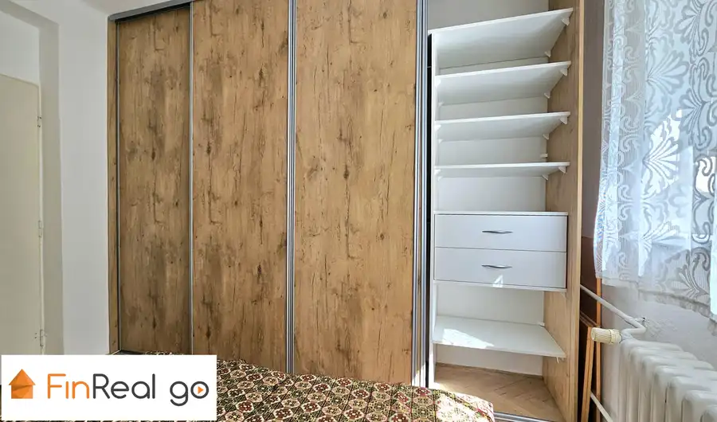
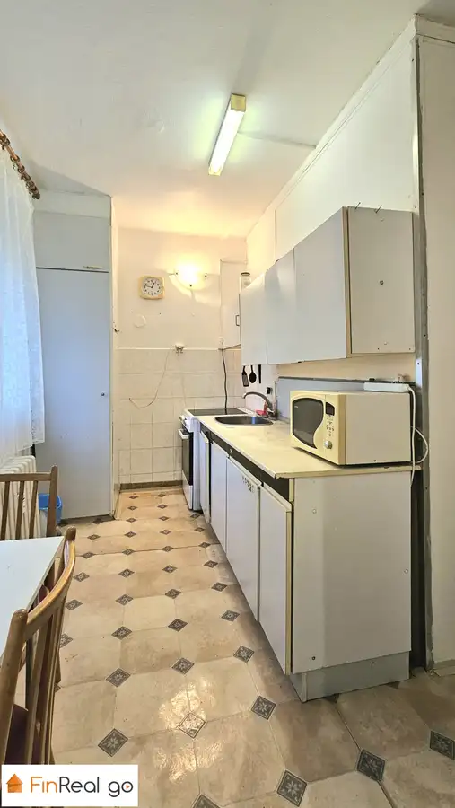
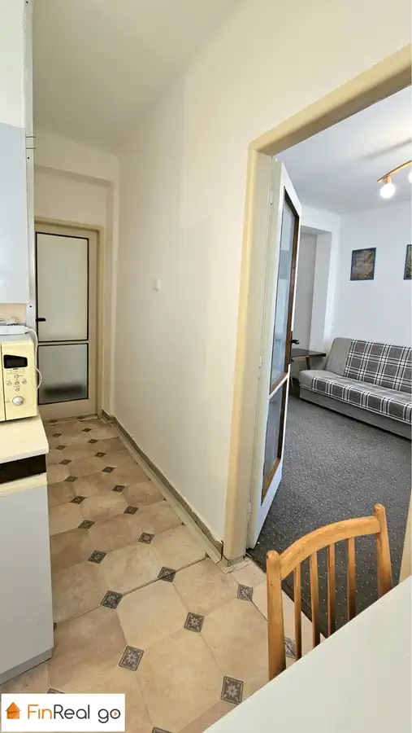
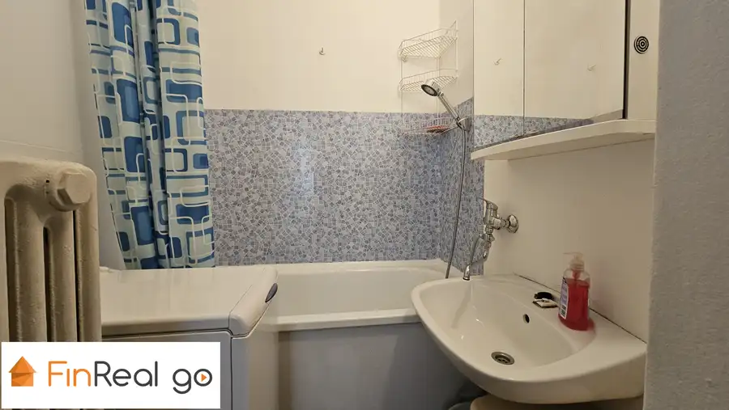
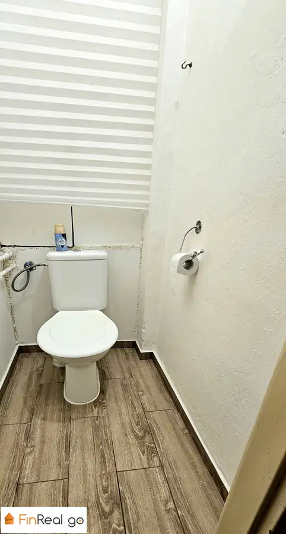

PREDAJ, 3-izbový zariadený byt, Levice
Levice







- Dispozícia3-izbový
- Plocha49.5 m²
- StavPôvodný stav
- VlastníctvoOsobné
O nehnuteľnosti
FinReal go v exkluzívnom zastúpení ponúka na predaj 3-izbový byt v pôvodnom zachovalom stave. Ideálne riešený byt s podlahovou plochou 49,50 m2 sa nachádza na prízemí tehlového bytového domu, v blízkosti autobusovej a železničnej stanice, na Vajanského ulici v Leviciach. Byt sa predáva zariadený a je voľný ihneď.Byt:- podlahová plocha: 49,50 m2- má plastové okná s vonkajšími plastovými roletami, drevené parkety, bezpečnostné dvere, v spáľni roll door skriňu- pôvodný veľmi zachovalý stav, vhodný na rekoštrukciu podľa vlastných predstáv- vymenené stupačky- pivnicaOrientácia:- spáľňa a detská izba na východnú stranu, obývačka a kuchyňa na západnú stranuDispozícia bytu:- vstupná chodba, kuchyňa, obývačka, spáľňa, detská izba, kúpeľňa a samostatné WCVýhody bytu:- prízemný byt, vhodný pre seniorov, poprípade aj pre osoby používajúce invalidný vozík- nízke náklady- bezproblémové parkovanie priamo pri bytovom dome- byt je zariadený, možnosť hneď bývať, prípadne prenajímať- poloha bytového domu- blízkosť autobusovej a železničnej stanice, škôlky, základnej školy, obchodov, do centra mesta je 8 minút pešou chôdzou- voľný ihneďLokalita:- kompletná občianska vybavenosť: obchody, škôlka, základné školy, stredné školy, detské ihriská, lekáreň, polícia- množstvo zelene v okolí bytového domuBytový dom:- 4 poschodový- tehlový zateplený, bez výťahu- rekonštrukcia spoločných priestorov: plastové vchodové dvere, schránky, zvončeky, plastové okná v spoločných priestoroch- miestnosť na odkladanie bicyklov a kočíkovCena:Cena bytu so zariadením je 88.000,- EUR vrátane provízie, kompletného odborného a právneho servisu.Nehnuteľnosť je možné financovať prostredníctvom HÚ.Poskytujeme sprostredkovanie HÚ naším finančným špecialistom.V prípade záujmu kontaktujte makléra:Alena Vozárovátel.: +421905 519 295e-mail: alena.vozarova@frgo.sk
Parametre
- Cellar area
- 2 m²
- Cena vrátane energií
- Nie
- Druh
- 3 izbový byt
- Dátum zverejnenia
- 22. 04. 2026
- Orientácia
- Východná
- Počet izieb / miestností
- 3
- Počet pivníc
- 1
- Stav nehnuteľnosti
- Pôvodný stav
- Typ
- Predaj
- Umiestnenie
- Prízemie
- Vlastníctvo
- Osobné
- Vybavenie
- Pivnica, Verejné parkovanie
- Vykurovanie
- Ústredné
- Úžitková plocha
- 49.5 m²